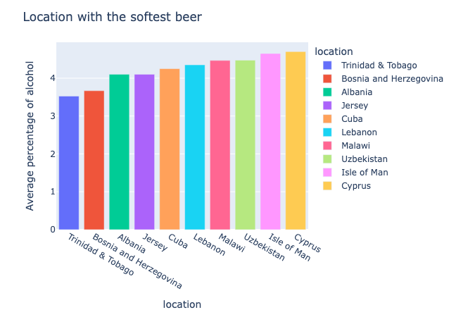

Welcome to the Beer Trip Agency!
Been a rough few weeks, correcting 100 ADA stories. How will you celebrate? A few drinks? A holiday maybe? Why not both :-) Welcome to BTA (Beer Trip Agency SA), where we design beer-tasting trips around the world taking into account our customers' preferences! Using the provided data, we design several trips around the world, taking into account different parameters that might be relevant to our drunk-driven clients. We pick the best spots corresponding to characteristics such as alcohol percentage, top-rated beers, and brewery diversity among other things. Then, we establish a general ranking designed in relation to customer preferences, giving more or less weight to the initial ratings. Once our algorithm brews through, we determine the regions that will make up the world tour. We'll propose brewery visits in countries, along with the contacts of the region's best beer lovers/experts. Ale the best for a trip Lager than life!
Trip 1 : The Booze Odyssey
Discover the Globe's Softest and Strongest Brews!
For this ranking, we considered the average percentage of alcohol in beers for every locations. This ranking allows us to find the countries/locations with the strongest/softest beers. Whether you like strong or soft beers this ranking will satisfy any tastes
